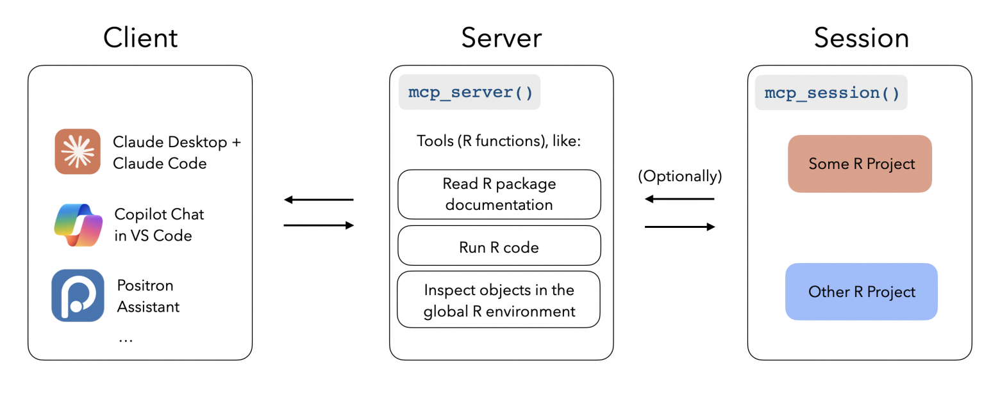
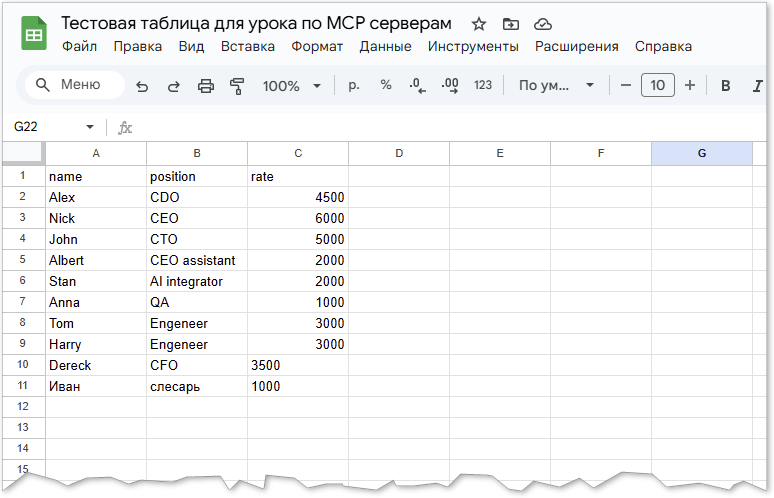
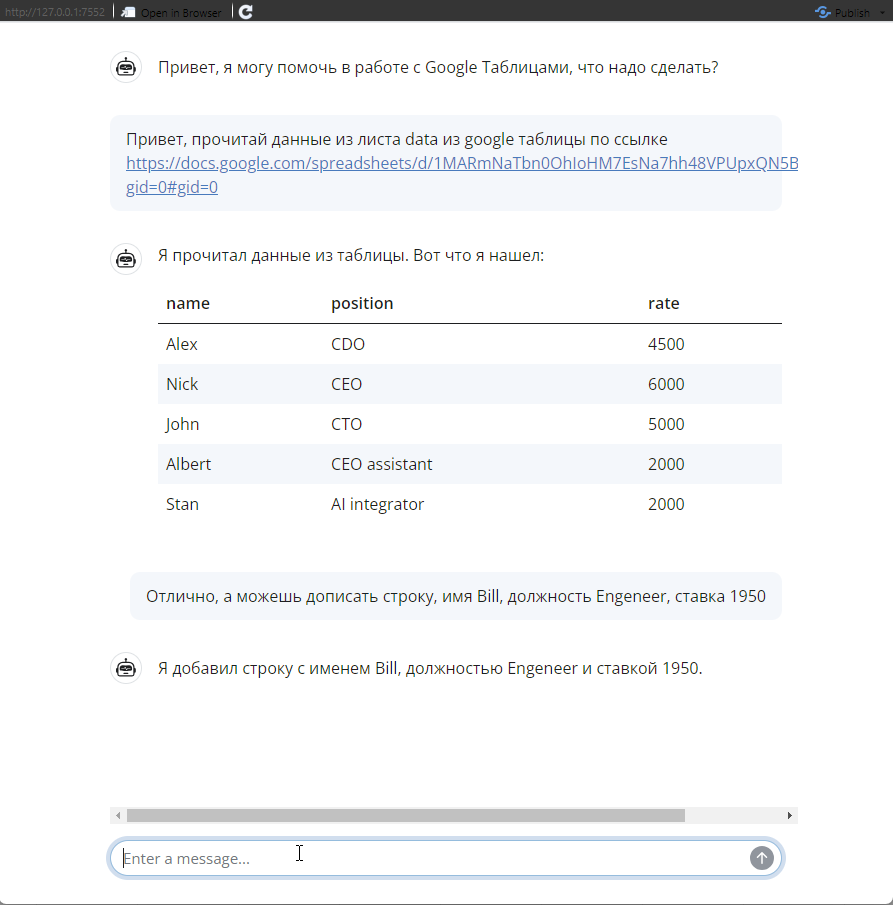
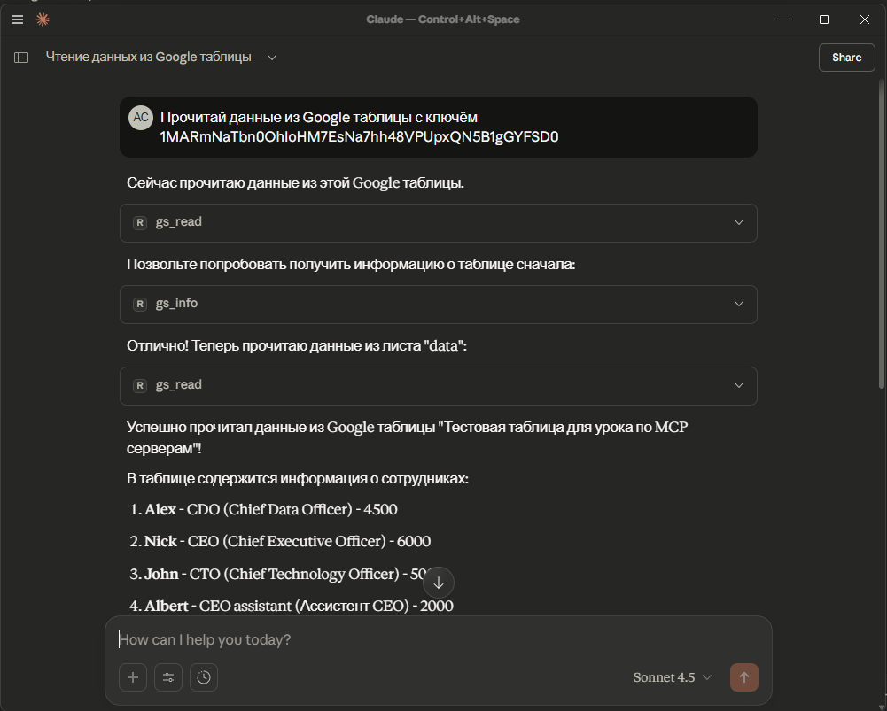

Как написать свой MCP сервер на языке R
Ранее я уже рассказывал про разработку AI чатов на языке R. Теперь сделаем шаг дальше. В этой статье мы разберем, как научить модель работать с вашими функциями и сервисами через MCP сервер. Такой сервер позволяет расширять возможности ИИ: он может читать и записывать файлы, обращаться к API, работать с Google Sheets и выполнять повторяемые операции, которые обычно делаете вручную. Покажу, как создать такой MCP сервер на R и как подключить его к вашему AI чату.

Если вы интересуетесь анализом данных возможно вам будут полезны моиtelegramиyoutubeканалы. Большая часть контента которых посвящены языку R.
Содержание
- Видео
- Что такое MCP сервер
- Язык R как MCP сервер
- Язык R как MCP клиент
- Заворачиваем AI ассистента в интерфейс чата
- Подключаем MCP сервер к Claude Desktop
- Заключение
Видео
Для тех кто не особо любит читать – ниже видео урок с подробным объяснением всего, о чём я далее буду рассказывать в этой
Что такое MCP сервер
MCP-сервер — это сервис, который предоставляет языковым моделям (типа ChatGPT или Claude) доступ к функциям и данным на вашей стороне. Модель подключается к серверу через единый стандартный протокол и получает «инструменты»: функции, API-эндпоинты, доступ к файлам, базе данных, Google Sheets и т.д.
По сути: MCP-сервер = адаптер между вашим кодом и ИИ, который говорит с моделью на понятном ей стандартизированном языке.
Это способ научить ИИ пользоваться вашими функциями, но не через обычный function calling (как внутри одного запроса), а через универсальный сервер, к которому могут подключаться разные приложения — Claude, VSCode плагины, ellmer, ваш Shiny, боты и т.д.
Язык R как MCP сервер
Используя пакет mcptools язык R может выполнять роль и MCP сервера, и MCP клиента.

MCP сервер на R должен состоять из следующих компонентов:
- Функции на языке R;
- Аннотации к этим функциям, т.е. их описание;
- Скрипт должен возвращать список объектов созданных с помощью
ellmer::tool().
Ниже я приведу небольшой пример написанного на языке R MCP сервера для работы с Google Sheets API.
Если вы ранее не работали с Google Sheets API на языке R то можете обратиться к статье “Как работать с API Google Таблиц (Google Sheets API v4) на языке R с помощью нового пакета googlesheets4”.
# gs-tools.R ----------------------------------------------
suppressPackageStartupMessages({
library(ellmer)
library(googlesheets4)
library(tibble)
})
# Создание R функций
# 1) Создать демо‑таблицу ------------------------------------------------------
.gs_init_demo <- function(title = "MCP Demo Contacts") {
.gs4_auth_once()
df0 <- tibble(name = character(), email = character(), city = character())
ss <- gs4_create(name = title, sheets = list(contacts = df0))
# Вернём удобные поля для LLM
meta <- gs4_get(ss)
return(jsonlite::toJSON(
list(
spreadsheet_url = meta$spreadsheet_url,
spreadsheet_id = as_sheets_id(ss)$spreadsheet_id,
worksheet = "contacts"
)
)
)
}
# 2) Прочитать верхние n строк -------------------------------------------------
.gs_read <- function(sheet, worksheet = "contacts", range = NULL, n_max = 5) {
googlesheets4::gs4_auth(path = Sys.getenv("GOOGLE_SERVICE_ACCOUNT_JSON", unset = ""))
res <- suppressMessages(googlesheets4::read_sheet(sheet, sheet = worksheet, range = range, n_max = n_max))
return(jsonlite::toJSON(res, pretty = TRUE, auto_unbox = TRUE))
}
# 3) Добавить одину строку -----------------------------------------------------
.gs_append_contact <- function(sheet, worksheet = "data", name, position = NA, rate) {
googlesheets4::gs4_auth(path = Sys.getenv("GOOGLE_SERVICE_ACCOUNT_JSON", unset = ""))
df <- tibble(name = name, position = position, rate = rate)
googlesheets4::sheet_append(ss = sheet, data = df, sheet = worksheet)
return(jsonlite::toJSON(list(ok = TRUE, appended = nrow(df)), pretty = TRUE, auto_unbox = TRUE))
}
# 4) Прочитать метаданные таблицы ----------------------------------------------
.gs_info <- function(sheet) {
googlesheets4::gs4_auth(path = Sys.getenv("GOOGLE_SERVICE_ACCOUNT_JSON", unset = ""))
res <- suppressMessages(googlesheets4::gs4_get(sheet))
return(jsonlite::toJSON(res, pretty = TRUE, auto_unbox = TRUE))
}
# 5) Проверка значений переменной среды ----------------------------------------
.gs_show_env <- function(env) {
message("Переменная среды: ", Sys.getenv(env, unset = ""))
return(jsonlite::toJSON(Sys.getenv(env, unset = ""), pretty = TRUE, auto_unbox = TRUE))
}
# Описания инструментов (ellmer 0.3.0) -----------------------------------------
Tool_gs_init <- tool(
.gs_init_demo,
name = "gs_init",
description = "Create an empty Google Sheet with a 'contacts' worksheet (name, email, city). Returns spreadsheet metadata.",
arguments = list(
title = type_string("Spreadsheet title", required = FALSE)
)
)
Tool_gs_read <- tool(
.gs_read,
name = "gs_read",
description = "Read a small preview from a Google Sheet. Useful for head/preview, not full export.",
arguments = list(
sheet = type_string("Google Sheet URL or ID"),
worksheet = type_string("Worksheet name", required = FALSE),
range = type_string("A1 range like 'A1:D20'", required = FALSE),
n_max = type_integer("How many rows to return", required = FALSE)
)
)
Tool_gs_append_contact <- tool(
.gs_append_contact,
name = "gs_append_contact",
description = "Append a single contact row (name, email, optional city) to the Google Sheet.",
arguments = list(
sheet = type_string("Google Sheet URL or ID"),
worksheet = type_string("Worksheet name"),
name = type_string("Employee name"),
position = type_string("Employee job title", required = FALSE),
rate = type_string("Employee salary")
)
)
Tool_gs_info <- tool(
.gs_info,
name = "gs_info",
description = "Read a google sheet metadata info.",
arguments = list(
sheet = type_string("Google Sheet URL or ID")
)
)
Tool_show_env <- tool(
.gs_show_env,
name = "gs_show_env",
description = "Show environtmen variable for debug.",
arguments = list(
env = type_string("Environ variables name")
)
)
msum <- function(x) sum(x)
Tool_sum <- tool(
msum,
name = "sum",
description = "Sum of Vector Elements",
arguments = list(
x = type_array(type_integer())
)
)
mmax <- function(x) max(x)
Tool_max <- tool(
mmax,
name = "max",
description = "Max value of Vector Elements",
arguments = list(
x = type_array(type_integer())
)
)
# MCP сервер должен вернуть список инструментов
list(
Tool_sum,
Tool_max,
Tool_gs_init,
Tool_gs_read,
Tool_gs_append_contact,
Tool_gs_info,
Tool_show_env
)
Сохраняем код нашего MCP сервера в файл gs-tools.R.
Код этого MCP сервера, как я и писал выше, состоит из 3 блоков:
- Создание R функций:
.gs_init_demo()– создание Google таблицы.gs_read()– чтение google таблицы.gs_append_contact()– добавить строку в google таблицу.gs_info()– чтение метаданных google таблицы.gs_show_env()– чтение переменной средыmsum()/mmax()– арифметические функции- Описание функций:
Tool_gs_initTool_gs_readTool_gs_append_contactTool_gs_infoTool_show_envTool_sumTool_max- Возвращает список инструментов
Есть несколько правил, которые необходимо помнить при написании своего MCP сервера:
- Все функции должны возвращать JSON объекты, поэтому у меня все возвращаемые объекты завёрнуты в
return(jsonlite::toJSON(obj, pretty = TRUE, auto_unbox = TRUE)) - Если внутри функции вам необходимо использовать какие-то пакеты, то прописывайте полный путь к этой функции, т.е.
package::function()а не простоfunction(). - В конце скрипта должен возвращаться список созданных инструментов.
При описании своих функций с помощью ellmer::tool() вам необходимо передать следующие аргументы:
- Сам объект функции, которую описываете
- Дать её имя, которое будет использовать модель
- Задать подробное описание функции, именно по описание модель из контекста промпта будет понимать какую функцию ей необходимо вызвать.
- Отдельным списком дать описание каждого аргумента функции, для обозначения того, какого типа данные необходимо передавать в каждый из аргументов функции используйте семейство функций
ellmer::type_*(), которые можно разделить на 3 категории: - Скаляры представляют собой отдельные значения, которые бывают пяти типов:
type_boolean(),type_integer(),type_number(),type_string()иtype_enum(), представляющие собой отдельные логические, целочисленные, двойные, строковые и факторные значения соответственно. - Массивы представляют любое количество значений одного типа и создаются с помощью
type_array(). Вы всегда должны указывать item аргумент, который определяет тип каждого отдельного элемента. Массивы скаляров очень похожи на атомарные векторы R. Если необходимо передавать вектор какого то определённого типа, то необходимо использовать сочетание функций, например если аргумент требует передать целочисленный вектор то описать это можно так:type_array(type_integer()). - Объекты представляют собой набор именованных значений и создаются с помощью
type_object(). Объекты могут содержать любое количество скаляров, массивов и других объектов. Они похожи на именованные списки в R.
Для того, чтобы подключить MCP сервер к какому либо клиенту, будь то ellmer или Claude Desktop, необходимо прописать его конфиг в виде json файла:
{
"mcpServers": {
"r-gsheets": {
"command": "Rscript",
"args": ["-e", "mcptools::mcp_server(tools='G:/GS_MCP/gs-tools.R')"],
"env": {
"GOOGLE_SERVICE_ACCOUNT_JSON": "G:/GS_MCP/service.json",
"R_LIBS_USER": "C:/Users/User/AppData/Local/R/win-library/4.4"
}
}
}
}
mcpServersэто объект верхнего уровня, каждый его дочерний элемент является отдельным подключенным MCP сервером.r-gsheets– заданное нами имя для MCP сервера, который мы написали.command– каждый MCP сервер запускает какую либо команду, в нашем случае MCP сервер запускается через утилиту Rscript.args– сюда мы передаём аргументы командной строки, в нашем случае для выполнения R кода прописывается"-e", и далее сама команда запуска MCP сервера"mcptools::mcp_server(tools='G:/GS_MCP/gs-tools.R')", т.е. мы запускаем MCP сервер, который считывает инструменты из созданного нами файлаgs-tools.R.env– позволяет передать в MCP сервер переменные среды, в моём случае:GOOGLE_SERVICE_ACCOUNT_JSON– передаю путь к ключу сервисного аккаунта Google, под которым проходит авторизация в Google Sheets.R_LIBS_USER– отдельно передаю путь к моей пользовательской библиотеке пакетов, получить путь можно через.libPaths(). Если не задавать эту переменную то в моём случае MCP сервер на windows вообще не запускался, потому что не понимал откуда подгружать необходимые пакеты.
R как MCP клиент
У нас уже есть код и конфиг нашего MCP сервера, теперь осталось разобраться с тем, как подключить его к объекту чата созданного с помощью ellmer::chat_*().
В этом разделе мы будем работать с Google таблицами, я заранее создал демо таблицу и расшарил доступ на сервисный аккаунт, который использую в своём MCP клиенте.

Работу с пакетом ellmer, и объектом Chat() я подробно разбирал в статье “Как мы внедрили LLM в рабочие процессы аналитиков на R — и сделали это бесплатно”.
Для подключения MCP сервера достаточно использовать метод Chat$set_tools():
library(mcptools)
library(ellmer)
# Создаём объект чата
chat <- chat_google_gemini(system_prompt = 'Ты помошник по работе с google таблицами')
# Подключаем MCP сервер
chat$set_tools(mcp_tools(config = "G:\GS_MCP\gs-tools.json"))
# Используем инструменты из MCP сервера
chat$chat('Привет, скажи какой список инструментов у тебя есть?')
# Проверяем что переменные окружения успешно считались из конфига MCP сервера
chat$chat('Покажи мне значение переменной среды GOOGLE_SERVICE_ACCOUNT_JSON')
# Читаем Google таблицу
chat$chat("Посмотри какие метаданные есть в таблице 1MARmNaTbn0OhIoHM7EsNa7hh48VPUpxQN5B1gGYFSD0")
chat$chat("Теперь у той же таблицы с ключём 1MARmNaTbn0OhIoHM7EsNa7hh48VPUpxQN5B1gGYFSD0 прочитай данные с листа data, что там?")
chat$chat("Хорошо, а можешь теперь посчитать общую сумму зарплат из поля rate?")
chat$chat("У кого из сотрудников в таблице самая высокая зарплата?")
# Запись данных
chat$chat("А теперь запиши в эту же таблицу новую строку, имя Erik, должность CFO, оклад 4250")
Т.е. в этом примере мы:
- Создаём объект чата с помощью
chat_google_gemini() - Подключаем MCP сервер через
chat$set_tools(mcp_tools(config = "gs-tools.json")), указав путь к созданному ранее конфигу MCP сервера.
Далее модель из контекста вашего промпта понимает какие из инструментов MCP сервера ей использовать для выполнения действий.
Заворачиваем AI ассистента в интерфейс чата
Теперь с помощью пакета shinychat мы можем создать интерфейс для нашего AI ассистента по работе с Google Таблицами.
library(shiny)
library(shinychat)
library(mcptools)
ui <- bslib::page_fillable(
chat_ui(
id = "chat",
messages = "Привет, я могу помочь в работе с Google Таблицами, что надо сделать?"
),
fillable_mobile = TRUE
)
server <- function(input, output, session) {
# Создаём объект чата
chat <- ellmer::chat_google_gemini(
system_prompt = 'Ты помошник по работе с google таблицами'
)
# Подключаем MCP сервер
chat$set_tools(mcp_tools(config = r"(G:\GS_MCP\gs-tools.json)"))
observeEvent(input$chat_user_input, {
stream <- chat$stream_async(input$chat_user_input)
chat_append("chat", stream)
})
}
shinyApp(ui, server)
Теперь ваш AI ассистент будет иметь графический интерфейс, и уметь работать с Google Таблицами.

Подключаем MCP сервер к Claude Desktop
Написанный на R MCP сервер можно подключать не только к ellmer, но и к другим клиентам, например Claude Desktop.
Для этого в Claude Desktop перейдите в Settings / Developer / Edit config, и добавьте созданный ранее JSON конфиг для подключения нашего MCP сервера.
После перезапуска Claude Desktop вы сможете использовать MCP сервер:

Заключение
MCP сервер открывает для R новые варианты использования ИИ. Вместе с ellmer, mcptools и shinychat вы можете собрать полноценного ассистента, который не только отвечает на вопросы, но и выполняет полезные задачи: работает с API, файлами и любыми вашими функциями. Такой подход помогает быстрее автоматизировать рутину и встроить AI в ваши процессы без сложной инфраструктуры.